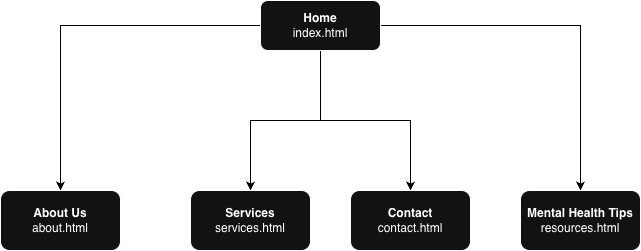

CP1406/CP5638 - Assignment 1 - Project Plan
Name: LIN KEXIN - 14825560
Goal
To increase new patient appointments at 100SMILES Dental Care by 25% within the first six months of launching the website by making dental care services easily accessible and building trust through transparent communication of expertise, services, and patient education resources.
Success Evaluation
Success will be measured through the following quantifiable metrics tracked over a six-month period: number of new patient appointment requests made through the website's contact form or phone calls referencing the website; percentage increase in total patient appointments compared to the six months prior to launch; and engagement metrics including time spent on the services and resources pages, which indicate user interest in learning about dental care options. Additionally, patient surveys during their first visit will ask how they heard about the practice to directly attribute website effectiveness.
Target Audience
Primary Target Audience: Families with children aged 3-12 in the Razole, Queensland area who are seeking a trusted, family-friendly dental care provider for preventative and routine dental services.
Design Strategy for Target Audience: The website will be designed with a warm, welcoming, and non-clinical aesthetic to reduce dental anxiety common in both children and parents. Key design elements include: using soft, calming color schemes (blues and greens) that convey trust and cleanliness without being sterile; featuring prominent imagery of happy families and children to create emotional connection and relatability; organizing content with clear, jargon-free language and visual icons to make information easily scannable for busy parents; highlighting preventative care and children's dentistry services prominently on the homepage; and including educational resources about children's oral health to position the practice as a caring partner in family wellness rather than just a service provider.
Site Flowchart
Wireframes
Wireframes will be developed during the design phase to map out the layout of each page. The home page will feature a prominent hero section with a welcoming image and clear call-to-action for booking appointments, followed by sections introducing the practice, highlighting key services, showcasing the team, and displaying current promotions. Navigation will be consistent across all pages with a horizontal menu bar. The services page will use a clean grid layout to present different dental services with icons. The about page will feature individual profile cards for each team member. The contact page will prominently display contact information, trading hours, and a map. The resources page will organize educational articles in an accessible format with clear headings and summaries.